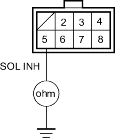
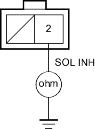
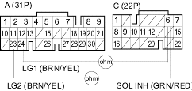

- Turn the ignition switch OFF.
- Disconnect the solenoid harness connector (8P).
- Measure the resistance between solenoid harness connector terminal No. 5 and body ground.
SOLENOID HARNESS CONNECTOR (8P)

Terminal side of male terminals
Is the resistance 11.7-21.0 ohm;?
YES - Go to step 7.
NO - Go to step 4.
- Remove the lower valve body assembly.
- Disconnect the solenoid harness from inhibitor solenoid connector (2P).
- Measure the resistance between No. 2 terminal and body ground.
INHIBITOR SOLENOID CONNECTOR (2P)

Terminal side of male terminals
Is the resistance 11.7-21.0 ohm;?
YES - Replace the solenoid harness. 
NO - Replace the lower valve body assembly.
- Disconnect PCM connectors A (31P) and C (22P).
- Check for continuity between PCM connector terminal C6 and A23 or A24.
PCM CONNECTORS

Wire side of female terminals
Is there continuity?
YES - Repair short in the wire between PCM connector terminal C6 and solenoid harness connector (8P).
NO - Go to step 9.
- Reconnect solenoid harness connector (8P).
- Measure the resistance between PCM connector terminals C6 and A23 or A24.
PCM CONNECTORS

Wire side of female terminals
Is the resistance 11.7-21.0 ohm;?
YES - Check for loose terminal fit in the PCM connectors. If necessary, substitute a known-good PCM and recheck.
NO - Repair loose terminals or open in the wire between PCM connector terminal C6 and the inhibitor solenoid.